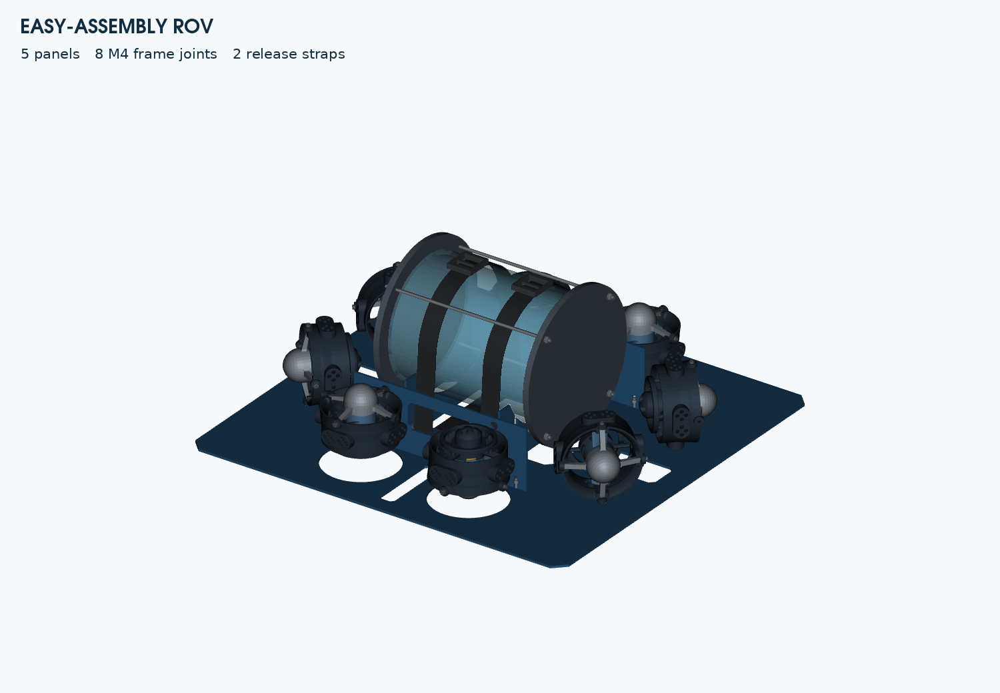
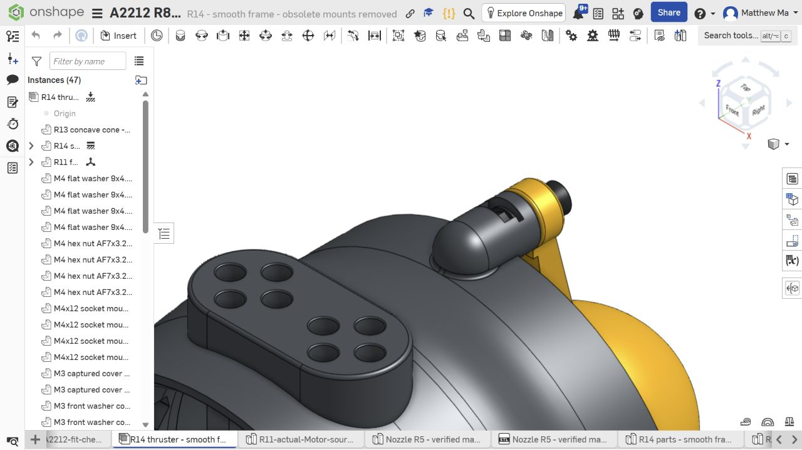
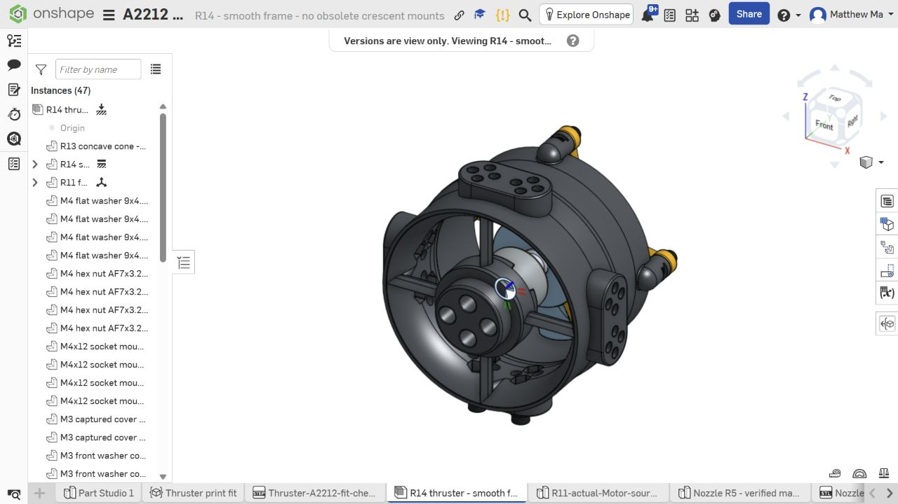
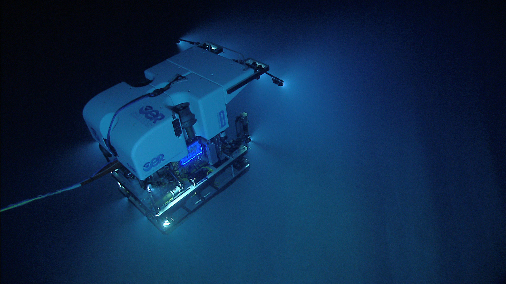

WEBB SUBMARINE ROV / STUDENT ENGINEERING
Built to explore.Designed to learn.
We’re building an underwater robot to help the museum find fossils. Follow the ideas, experiments, and small breakthroughs taking us beneath the surface.
Student-led engineering. Shared discoveries.
THE OCEAN LAB / THREE WAYS TO EXPLORE
Don’t just look.
Dive into it.
Go from the surface to the deep, try a fossil-search mission, and paint a little light into the ocean.
Change depth, watch the light fade, and log illustrated marine encounters.
02 / PILOT ↗Take the ROV helm.Scan a fictional seabed, steer toward contacts, and document three finds.
03 / CREATE ↗Paint with ocean light.Draw drifting glows, shape the current, and make the deep your canvas.
01 / THE PROJECT
An underwater robot.
A hands-on education.
A remotely operated vehicle brings mechanical design, electronics and programming into one shared problem.
A motor needs a secure mount. A propeller needs room to turn. Every part needs to work with the parts around it. We’re developing those connections through CAD, fabrication planning and testing.
Our vehicle layout has eight thruster positions. Recent work focuses on the thruster assembly, including a smoother housing, accessible hardware and small pieces for checking printed fit.

01 / DESIGN
Make room for every part.
Use CAD to work through motor fit, blade clearance, fastener access, and the space needed for wiring.
02 / BUILD
Bring the drawing to the bench.
Print small fit pieces, assemble the hardware, and use the actual parts to find what the model missed.
03 / TEST
Let the next test lead.
Check fit, retention, vibration, and thrust. Each result gives us a reason for the next revision.

THE CURRENT DESIGN
Small changes.
Better assemblies.
The latest housing removes obsolete mounts and smooths the outside of the thruster while retaining its working joints. The R13 cone and R11 fan carry forward into this configuration.
Read the assembly guideWhere we are todayCAD and fabrication development. Physical fit, retention, thrust and underwater operation still need testing. The earlier whole-vehicle model is a separate snapshot.
02 / FROM THE WORKSHOP
The work behind
the robot.
Design decisions, revisions and the ideas
that give the project a direction.
The work.
The setbacks.
The next revision.
Read the full club journal, from earlier development to October CAD changes, wiring, and the motor’s first spin.
ONE SHARED RECORD

Inside the
thruster design.
Follow the motor fit, fan retention, and housing revisions from the PLA baseline through R14.
What we need
to build next.
The full buying list and $150 bench-test alternative, with quantities, product links, compatibility notes, and the live Google Sheet.

A reason to
go deeper.
Our vision for finding and documenting underwater fossils with lights, cameras, and a robotic arm.
Exploration example: NOAA, public domain. Photo source ↗
03 / OUR MUSEUM VISION
Engineering with
a purpose beyond
the workshop.
Help the museum find fossils beneath the surface.
Search and document.
Develop lights and cameras to illuminate possible fossils and record finds in oceans, lakes, and other underwater environments.
Reach and retrieve.
Develop a robotic arm to inspect and carefully retrieve selected specimens under the museum’s guidance.
04 / THE DESIGN ARCHIVE
Open the files.
Follow the thinking.
Start with the current design, or explore
the records behind earlier revisions.
Project records & buying lists
CAD & fabrication files
Use the instructions for the revision you choose. Earlier hardware stacks and print files are not automatically interchangeable.